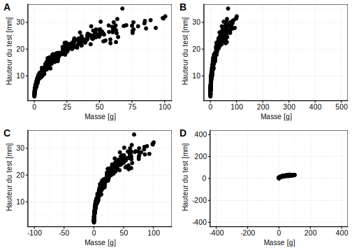

2.1 Graphique en nuage de points
Dès que vous vous sentez familiarisé avec les principes de base de R, vous allez pouvoir réaliser assez rapidement des beaux graphiques. Par exemple, si vous souhaitez représenter une variable numérique en fonction d’une autre variable numérique, vous pouvez exprimer cela sous la forme d’une formule2
\[y \sim x\]
que l’on peut lire “y en fonction de x”. Pour les deux variables numériques x et y, la représentation graphique la plus classique est le nuage de points (voir Fig. 2.1 pour un exemple).
Figure 2.1: Exemple de graphique en nuage de points. Des éléments essentiels sont ici mis en évidence en couleurs.
Les éléments indispensables à la compréhension d’un nuage de points sont mis en évidence à la Fig. 2.1 :
- Les axes avec les graduations (en rouge),
- les labels et les unités des axes (en bleu).
Les instructions dans R pour produire un tel nuage de point sont :
# Chargement de SciViews::R
SciViews::R
# Importation du jeu de données
(urchin <- read("urchin_bio", package = "data.io", lang = "fr"))# # A tibble: 421 x 19
# origin diameter1 diameter2 height buoyant_weight weight solid_parts
# <fct> <dbl> <dbl> <dbl> <dbl> <dbl> <dbl>
# 1 Fishe… 9.9 10.2 5 NA 0.522 0.478
# 2 Fishe… 10.5 10.6 5.7 NA 0.642 0.589
# 3 Fishe… 10.8 10.8 5.2 NA 0.734 0.677
# 4 Fishe… 9.6 9.3 4.6 NA 0.370 0.344
# 5 Fishe… 10.4 10.7 4.8 NA 0.610 0.559
# 6 Fishe… 10.5 11.1 5 NA 0.610 0.551
# 7 Fishe… 11 11 5.2 NA 0.672 0.605
# 8 Fishe… 11.1 11.2 5.7 NA 0.703 0.628
# 9 Fishe… 9.4 9.2 4.6 NA 0.413 0.375
# 10 Fishe… 10.1 9.5 4.7 NA 0.449 0.398
# # ... with 411 more rows, and 12 more variables: integuments <dbl>,
# # dry_integuments <dbl>, digestive_tract <dbl>,
# # dry_digestive_tract <dbl>, gonads <dbl>, dry_gonads <dbl>,
# # skeleton <dbl>, lantern <dbl>, test <dbl>, spines <dbl>,
# # maturity <int>, sex <fct># Réalisation du graphique
chart(urchin, height ~ weight) +
geom_point()
La fonction chart() requiert comme argument le jeu de donnée (urchin, c’est un objet dataframe ou tibble dans le langage de R), ainsi que la formule à employer dans laquelle vous avez indiqué le nom des variables que vous voulez sur l’axe des ordonnées à gauche et des abscisses à droite de la formule. Vous voyez que le jeu de données contient beaucoup de variables (les titres des colonnes du tableau en sortie). Parmi toutes ces variables, nous avons choisi ici de représenter height en fonction de weight, la hauteir en fonction de la masse des oursins. Jusqu’ici, nous avons spécifié ce que nous voulons représenter, mais pas encore comment (sous quelle apparence), nous voulons les métérialiser sur le graphique. Pour un nuage de points, nous voulons les représenter sous forme de … points ! Donc, nous devons ajouter la fonction geom_point() pour indiquer cela.
2.1.1 Pièges et Astuces
2.1.1.1 Modifications des échelles d’un graphiques
Vous devez être vigilant lors de la réalisation d’un nuage de point particulièrement sur l’étendue des valeurs présentées sur vos axes. Vous devez utilisez votre expertise de biologistes pour vous posez les deux questions suivantes :
Est ce que l’axe représente des valeurs plausibles de hauteurs et de masses de ces oursins apparetenant à l’espèce Paracentrotus lividus ?
Quels est la précision des mesures effectuées ?
Dans certains cas, la forme du nuage de points peut être distendu par la présence de valeurs aberrantes. Ce n’est pas le cas ici, mais nous pouvons le simuler en distandant artificiellement soit l’axe X, soit l’axe Y, soit les deux :
A <- chart(urchin, height ~ weight) +
geom_point() +
theme(text = element_text(size = 10)) # Réduction des labels
# Modification des échelles
B <- A + scale_x_continuous(limits = c(0, 500))
C <- A + scale_x_continuous(limits = c(-100, 120))
D <- A + scale_x_continuous(limits = c(-400, 400)) + scale_y_continuous(limits = c(-400, 400))
# Assemblage des graphiques
combine_charts(list(A, B, C, D), font.label = list(size = 14, align = "hv"))Figure 2.2: Piège du nuage de points. A) graphique initialemontrant la variation de la hauteur [mm] en fonction de la masse [g] B) graphique A avec la modification de l’échelle de l’axe X. C) Graphique A avec une seconde modification de l’axe X. D) Graphique A avec modification de l’échelle de l’axe X et de l’axe Y.
2.1.1.2 Transformations des données
Vous avez la possibilité d’appliquer une transformation de vos données (il est même conseillé de le faire) afin qu’elles soient plus facilement analysables. Par exemple, il est possible d’utiliser des fonctions de puissance, racines, logarithmes, exponentielles3 pour modifier l’apparence du nuage de points dans le but de le rendre plus linéaire (car il est plus facile d’analyser statistiquement des données qui s’alignent le long d’une droite).
# Réalisation du graphique de la hauteur en fonction de la masse
A <- chart(urchin, height ~ weight) +
geom_point()
# Application du logarithme sur les deux variables représentées
B <- chart(urchin, log(height) ~ log(weight)) +
geom_point()
# Assemblage des graphiques
combine_charts(list(A, B), font.label = list(size = 14, align = "hv"))Figure 2.3: A) Variation de la hauteur [mm] en fonction de la masse [g] d’oursins violets. B) Variation du logarithme népérien de la hauteur [mm] en fonction du logarithme népérien de la masse [g] de ces mêmes oursins
2.1.1.3 Utilisation des snippets
RStudio permet de récupérer rapidement des instructions à partir d’une banque de solutions toutes prêtes. Cela s’appelle des snippets. Vous avez une série de snippets disponibles dans la SciViews Box. Cela qui vous permet de réaliser un graphique en nuage de poinsts s’appelle .cbxy. Entrez ce code et appuyez ensuite sur la tabulation dans un script R, et vous verrez le code remplacé par ceci :
chart(data = DF, YNUM ~ XNUM) +
geom_point()Vous avez aussi à votre disposition l’aide-mémoire sur la visualisation des données (Data Visualization Cheat Sheet).
2.1.2 Le nuage de points en vidéo
Vous trouverez une vidéo ci-dessous vous expliquant la création du nuage de points dans R sur ce jeu de données mais analysant d’autres variables.
Cette vidéo ne vous a montré que les principaux outils disponibles lors de la réalisation de graphiques. Soyez curieux et expérimentez par vous-même !
2.1.3 A vous de jouer !
Etudiez le tutoriel relatif aux graphiques en nuage de points :
BioDataScience::run("02c_nuage_de_points")Les instructions que vous employez dans un learnR peuvent être employée dans un script d’analyse. Sur base du jeux de données urchin_bio, explorez différents graphiques en nuages de points. Assignment ClassRoom avec R et un script.
Inspirez vous de script présent dans le projet que vous venez de clonez. Faites une attention toute particulière à l’écriture d’un script. Il contient un titre , une date de la dernière mise à jour, le nom de l’auteur, un ensemble de commentaires permettant l’organisation de ce script.
Réalisez votre propre script et réalisez les graphiques suivants :
Représentez la variation de la hauteur en fonction de la masse des oursins
Représentez la variation des parties solides en fonction du poids immergés des oursins
Explorez par vous même le jeu de données
urchin_bioqui contient pas moins de 19 variables que vous pouvez tentez d’associer graphiquement. Réalisez au moins 5 graphiques différents.
2.1.4 Pour en savoir plus…
Visualisation des données dans R for Data Science. Chapitre du livre portant sur la visualisation des données
ggplot2 nuage de point. Tutorial en français portant sur l’utilisation d’un nuage de point avec le package
ggplot2et la fonctiongeom_point().Fundamentals of Data Visualization. Un livre sur les fondamentaux de la visualisation graphique.
R Graphics Cookbook - Chapter 5: Scatter Plots. Un chapitre d’un livre en anglais sur l’utilisation du nuage de point.
geom_point(). La fiche technique de la fonction.
Dans R, une formule permet de spécifier les variables avec lesquelles on souhaite travailler, et leur rôle. Par exemple ici, la variable x sur l’axe des abscisses et la variable y sur l’axe des ordonnées.↩
Pour les proportions (p) ou les pourcentages (%) (valeurs bornées entre 0 et 1 ou 0 et 100%, la transformation arcsin est souvent utilisée : \(p′ = \arcsin \sqrt{p}\).↩